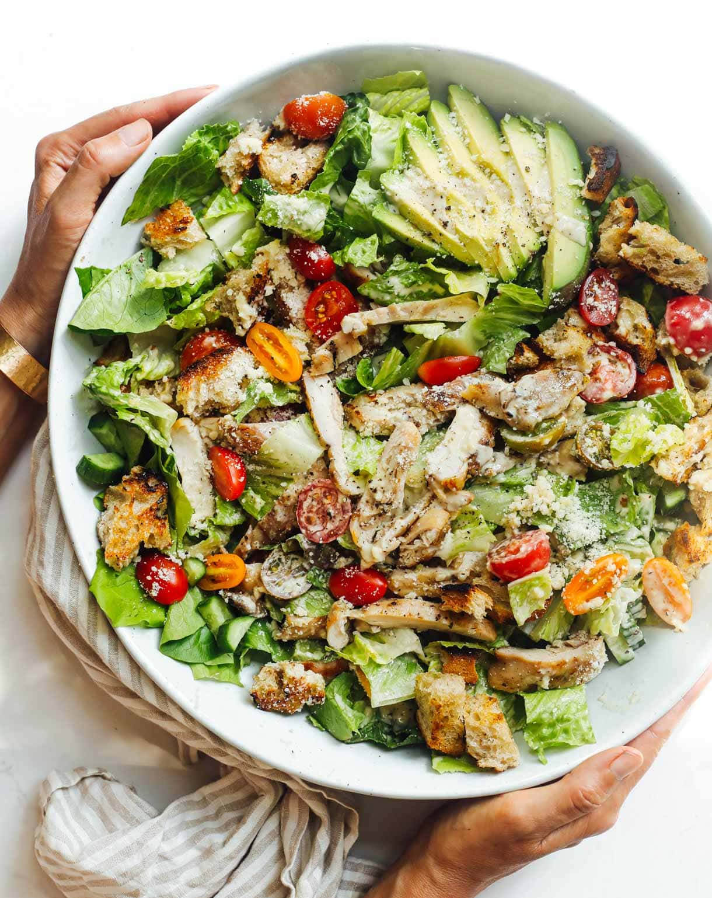

Odin's Caesar Salad

Description
A classic recipe for a reason, this chicken Caesar salad is delicious and satisfying. Crunchy romaine, creamy dressing, tender chicken, and savory cheese come together for a tasty favorite. Serve a lemon wedge with each salad if desired.
Ingredients
- 6 cups tightly packed chopped romaine lettuce
- 1 pound cooked boneless, skinless chicken breasts, cut into strips1 pound cooked boneless, skinless chicken breasts, cut into strips
- ½ cup finely shredded Parmesan cheese, such as Cracker Barrel
- ½ cup seasoned croutons
- ¼ cup creamy Caesar dressing, such as Kraft
Steps
- Heat oven to 200C/fan 180C/gas 6. Tear 1 medium ciabatta into big, ragged croutons or, if you prefer, cut with a bread knife. Spread over a large baking sheet or tray and sprinkle over 2 tbsp olive oil.
- Rub the oil into the bread and season with a little salt if you like (sea salt crystals are best for this). Bake for 8-10 mins, turning the croutons a few times during cooking so they brown evenly.
- Rub 2 skinless, boneless chicken breasts with 1 tbsp olive oil, season. Place pan over a medium heat for 1 min, until hot, but not smoking. Lay the chicken on the pan (it will sizzle if it’s hot enough) and leave for 4 mins.
- Turn the chicken, then cook for 4 mins more. Check if it’s cooked by poking the tip of a sharp knife into the thickest part; there should be no sign of pink and juices will run clear.
- Bash 1 garlic clove with the flat of a knife and peel off the skin. Crush with a garlic crusher. Mash 2 anchovies with a fork against the side of a small bowl.
- Grate a handful of parmesan cheese and mix with the garlic, anchovies, 5 tbsp Hellmann's Real Mayonnaise and 1 tbsp white wine vinegar. Season to taste. It should be the consistency of yogurt – if yours is thicker, stir in a few tsps water to thin it.
- Shave the cheese with a peeler. Tear 1 large cos or romaine lettuce into large pieces and put in a large bowl. Pull chicken into bite-size strips and scatter half over the leaves, along with half the croutons.
- Add most of the dressing and toss with your fingers. Scatter the rest of the chicken and croutons, then drizzle with the remaining dressing. Sprinkle the parmesan on top and serve straight away.
Home